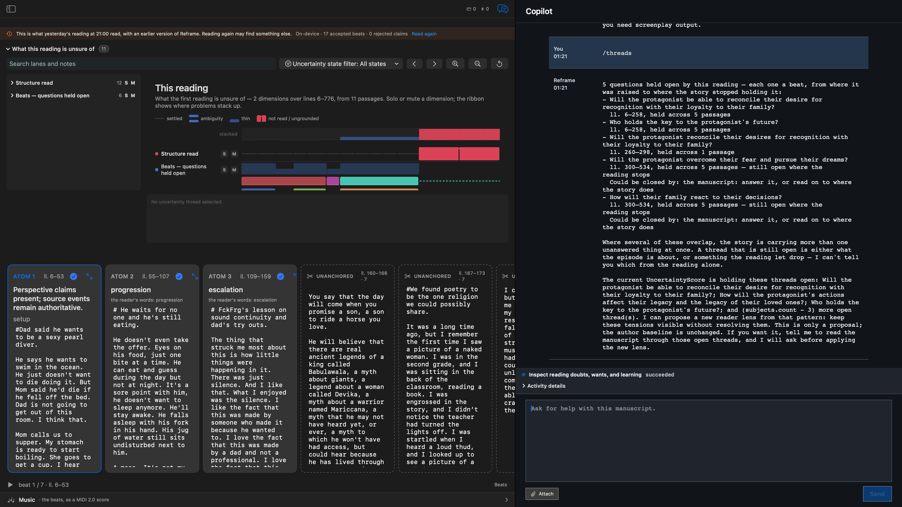

Read-only
The command inspects the current reading and does not change the draft or author baseline.
/threadsA read-only uncertainty ledger: what the current reading is still holding open, and what a writer may need to decide next.
On a fresh managed fixture, the slash-command route completed successfully and reported five open questions. The uncertainty score was disclosed by default, with the Structure read and Beats — questions held open lanes visible above the atoms. It inspected the current reading without mutating the manuscript or author baseline.

The command inspects the current reading and does not change the draft or author baseline.
The managed fixture carried the active reader-lens grounding identity into the reading workflow.
This proves the slash origin only. No released App build is claimed, and the capability closure remains pending origin-parity acceptance.